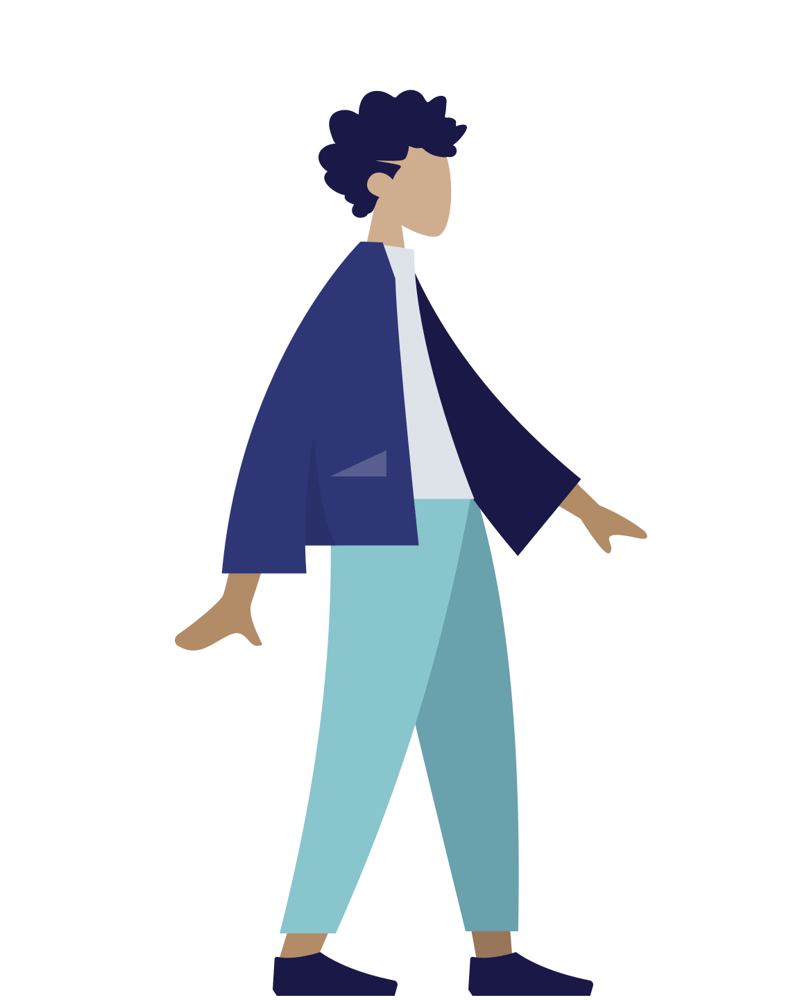
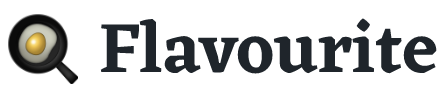

Hey, I'm Jim 👋
say hello or check out my work below 👇


Here's a snapshot of my previous experiences
Reducing keying errors
Preventing keying errors in mortgage applications by redesigning the submission process.
Scalable task management
Building a scalable task management tool for operational efficiency in the mortgage application process.

Making recipes smarter
Aggregating menus from the best restaurants, splitting them out by ingredient and making them searchable.
Building a charity app
Making climate donations work for both the charity and the donor.
Userpool: a pool of user testers!
Led the building of a scalable content machine for 11:FS's UX research platform, Pulse.